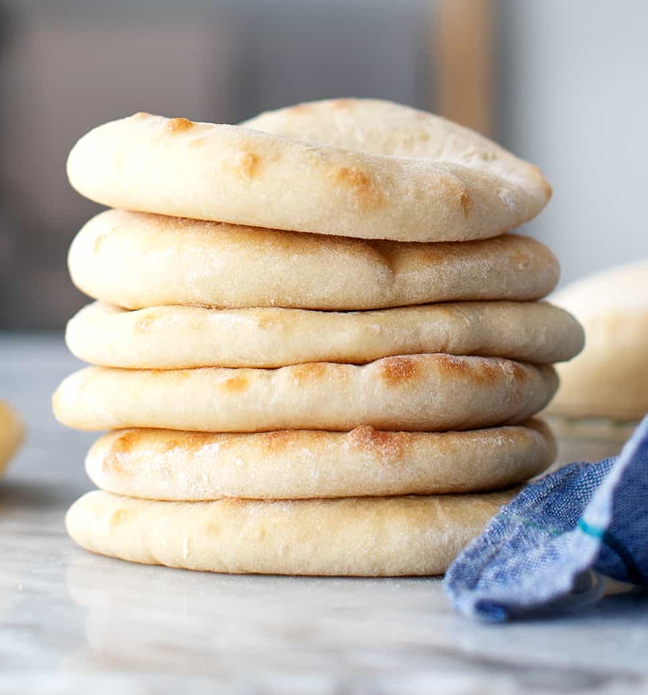

Pita Bread

Description:
This is a reciped to make soft pita bread. Use it for dunkin', dippin', or just noshin'!
Ingredients:
- Warm Water
- Dry Yeast
- Sugar
- Bread Flour
- Sea Salt
- Olive Oil
Steps:
- In bowl, combine water, yeast, and sugar.
- Get shoes on
- Walk down to local market/grocery store
- Purchase packet of pita bread
- Bring package back home
- Remove pita from package
- Warm pita using your preffered warming method. We recommend a nice breath hickory smoke.
- Enjoy pita that you didn't waste time making from scratch.